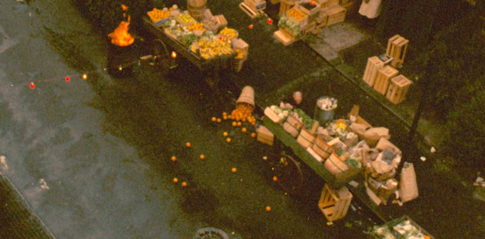
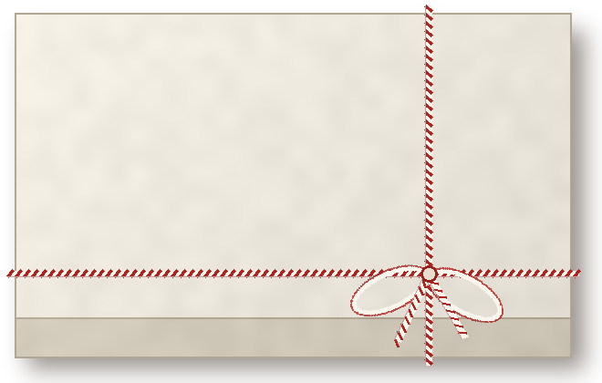

An orange on every table
Bought each morning at the fruit stand
by the olive oil company.
by the olive oil company.
From Nazorine's
Take the cannoli
Cannoli.25
Crisp shells, orange-scented ricotta, dark chocolate, crushed pistachio.

Nazorine
PASTRY
Boxed and tied with string, for the ride home.
Oil, garlic, tomatoes, then sausage and meatballs. Wine and a pinch of sugar. My trick.
Pete Clemenza
After dinner
Caffè & Bar
Espresso.10
Dark roast, a curl of lemon peel.
Blood orange soda.15
Ruby citrus syrup, cold seltzer.
Chianti.35
By the glass, from the straw bottle.
Anisette.30
Sweet cordial, two coffee beans.
House customs
Old-fashioned plumbing out back.
Police officers dine here often.
Never side against the family.